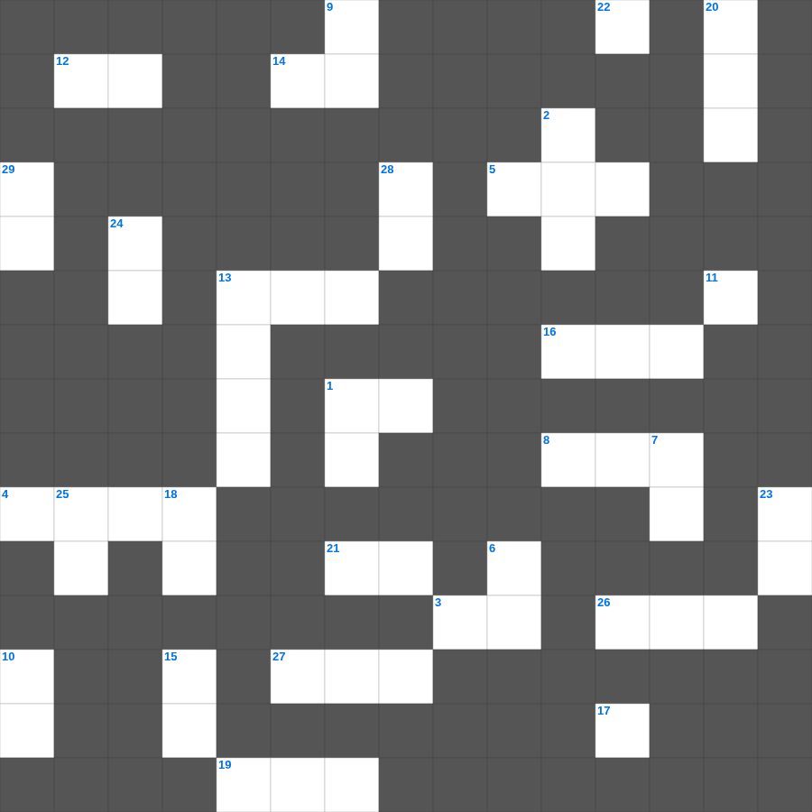

출애굽기 주요 인물과 사건
📌 서비스 정의
십자가로세로는 교회 주보와 주일학교에서 사용할 수 있는 성경 기반 가로세로 퍼즐 서비스입니다. 성경 인물, 사건, 핵심 구절을 바탕으로 제작되었습니다. 온라인 풀이 및 인쇄 기능을 제공합니다.
오늘은 출애굽기의 주요 내용을 담은 출애굽기 성경 퀴즈 문제를 준비했습니다. 총 35개의 힌트가 있으며, 주일학교 교재나 성경공부 자료로 활용하기 좋습니다. 무료로 즐기는 출애굽기 가로세로 퍼즐을 지금 바로 풀어보세요!

📝 가로 힌트
1. 율법을 받은 백성의 소리
3. 아론 자손의 제사
4. 아말렉과 싸운 장수
5. 모세의 누이, 선지자
5. 홍해에서 승리한 노래 부른 여인
8. 하나님의 백성 수백만 명
12. 흔든 제물
13. 여덟째 재앙, 밭을 덮은 벌레
14. 여섯째 재앙, 몸에 오른 것
16. 모세가 손 들 때 이긴 전쟁
17. 모세의 막대기에서 나온 것
19. 성막 앞에 세운 세례통
21. 모세가 애굽을 떠난 나이
26. 하나님의 산, 호렙이라고도 함
27. 누룩 없는 빵을 먹는 절기
📝 세로 힌트
1. 일곱째 재앙, 하늘에서 내린 것
2. 백성이 다툰 곳
6. 기름 섞은 반죽
7. 하늘에서 내린 양식
7. 하나님의 음식 두 번 모아 금지
8. 셋째 재앙, 티끌이 변한 것
9. 시내산을 덮은 것
10. 살인하지 말라
11. 모세가 반석을 쳐서 나온 것
13. 저녁에 진에 내려온 새
15. 거짓 증언 금지
17. 애굽 현자들의 막대기
18. 모세의 형, 대제사장
20. 모세가 부순 우상
22. 밤에 인도한 기둥
23. 여호와를 시험한 곳
24. 넷째 재앙, 무수히 날아든 것
25. 율법을 다시 받은 산
28. 이스라엘을 인도한 지도자
29. 낮에 인도한 기둥
🧑🏫 교회 교육 자료 활용
이 퍼즐은 주일학교 교재 추천 자료로 활용할 수 있고, 주일학교 주보에 넣기 좋은 분량으로 구성되어 있습니다. 수업용 주일학교 교안에 활동지로 붙이거나, 예배 후 복습용 주일학교 공과교재로 바로 사용할 수 있습니다.
🏷️ 키워드
출애굽기 성경 퀴즈 문제, 출애굽기, 십자가로세로, 성경퀴즈, 말씀퀴즈, 가로세로퍼즐, 주일학교 교재 추천, 주일학교 주보, 주일학교 교안, 주일학교 공과교재